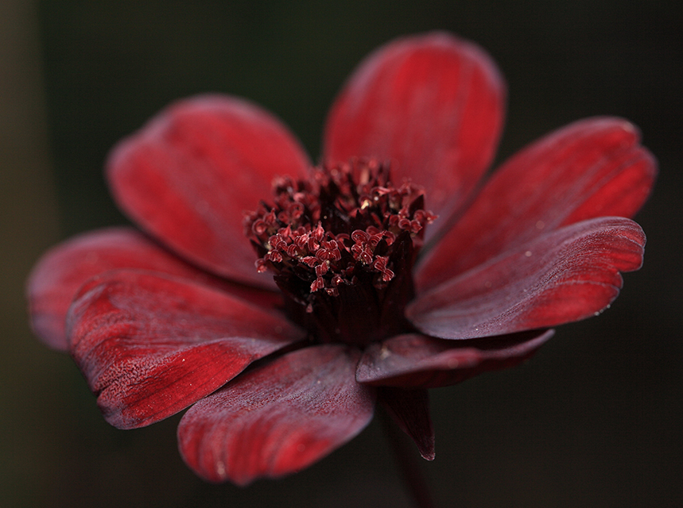
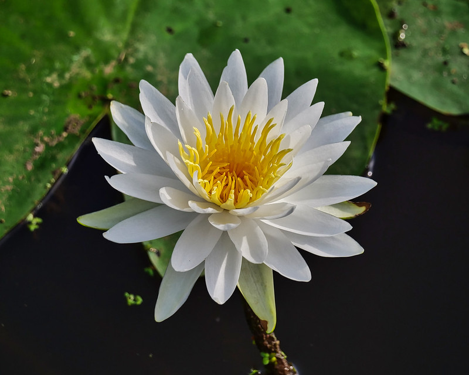
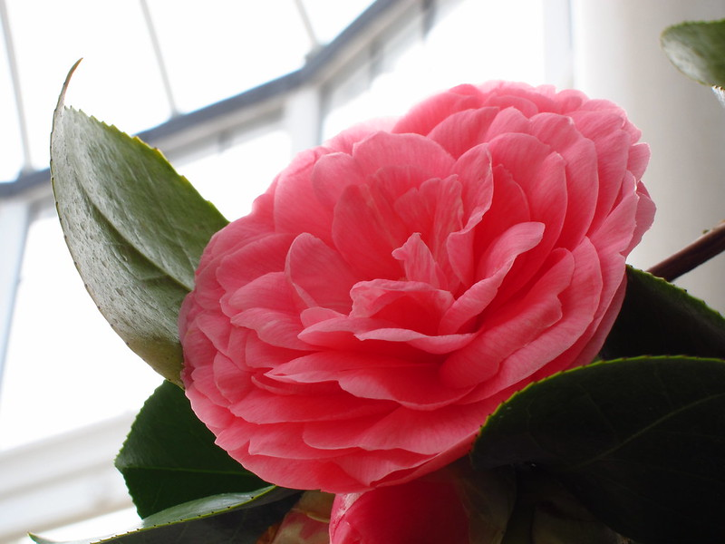

The most beautiful rare flowers in the world include the Franklin tree flower, the Fire Lily, Kadupul flower, and Chocolate Cosmos. Rare flowers can be plants that only bloom under specific conditions or are only rarely found growing in the wild. Some rare flowers are close to extinction.
One of the rarest flowers in the world is the Middlemist Red. There are only two locations on the planet where this flower is found—New Zealand and London. This camellia cultivar is not only one of the rarest blooms, but also one of the most beautiful.
Of course, there are many more exotic rare flowers in the world than the five mentioned already. Unusual rare flowering plants can be found in tropical rainforests, growing on the sides of mountains, or protected in botanical gardens. You may even be fortunate enough to grow beautiful and exotic rare flowers in your home or garden.
If you are fascinated to see some of the world’s most rare flowers, read on to find out more. Descriptions, pictures, and scientific names of the rarest flowers will help identify these unique plants.

The Chocolate Cosmos is among the rare flowers of the world because it no longer grows in the wild. Native to Mexico, this rare plant from the family Asteraceae is difficult to propagate and grow.
What makes this beautiful rare flower so unique? Apart from only a few wild species surviving in the world, the chocolate cosmos flower has stunning dark brown to red petals, just like chocolate. But the chocolate connection doesn’t end there. The distinctive flowers give off chocolatey aromas when they bloom in late summer evenings.

The white American waterlily is a beautiful aquatic plant that is becoming rare in some states of the U.S. The stunning feature of these water lilies is the large white flower that floats on a large leaf. Flowers measure up to 12” (30 cm) in diameter and have pure white petals. The overall shape of this aquatic flower is like a star and there are yellow stamens in the center of the flower.
one of the fascinating features of this rare flower is how it opens during the day and closes at night. If you are near a pond where white waterlilies grow, you will enjoy its delightful fragrance and stunning beauty.
Unfortunately, in some states, white waterlilies are on the list of plants “of special concern.”

Considered by many to hold the title of the rarest flower in the world, you can only find the Middlemist Red flower in two places in the world—London and New Zealand.
Botanist John Middlemist brought this species from China to London in 1804. The plant is now extinct in Asia and for some time, was thought to have disappeared from London. In 1999, scientists identified the Middlemist Red flower growing among a collection of other rare camellia flowers.
This rare species of flower looks like a dark pink rose with a showy flower head. The beautiful flower sits among lush green foliage that grows on the Middlemist Red camellia.